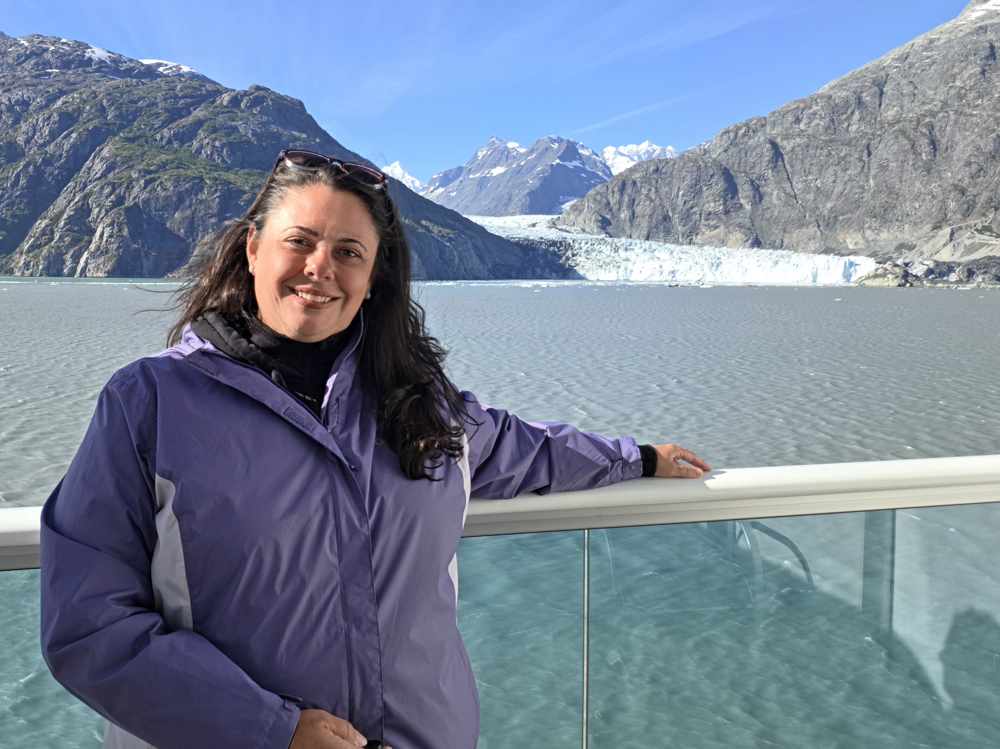

About Me

Hi, I’m Genel. Jelly was my childhood nickname that stuck well into adulthood. I’m 45 years old and spent the majority of my life in Massachusetts. I’m single. Divorced single. Not “it’s complicated” single. Not “we’re friends but also sleeping together” single. Just… single. I am also very witty, sarcastic and honest. Possibly too honest, depending on who you ask.
For most of my adult life, I did exactly what I was supposed to do. I went to college, earned a degree, paid off my loans, got married, built a career, bought a house, adopted many pets, earned a graduate degree, and advanced certifications in my field. I showed up. I stayed loyal. I played a responsible human very well.
It worked… until it didn’t.
First came the divorce. Then the quiet, uncomfortable realization that my life was getting smaller instead of bigger. Then unexpected changes at work. Burnout showed up uninvited. Restlessness followed. And the question “Is this really it?” refused to leave.
In January 2026, I resigned from my job after twenty years. That career was my identity, and I was proud of what I helped build. I still am. I just finally realized there’s more to life than only being good at work.
So I did the most logical thing a woman in her mid-40s could do: I started looking to book a vacation to “think.” One week became six months. Math happened. And suddenly it was cheaper to live on a cruise ship than in my apartment.
This site isn’t about perfect travel photos. It’s about choosing yourself. The beautiful parts. The awkward parts. The lonely moments. And the joy that shows up unexpectedly.
If you’re here because you’re curious, restless, or quietly wondering if you’re allowed to want more, welcome. And if you’re my friends or family, thank you for supporting this slightly unhinged but deeply intentional idea. Please follow me on one of my social channels, as those will be updated more frequently than this site.